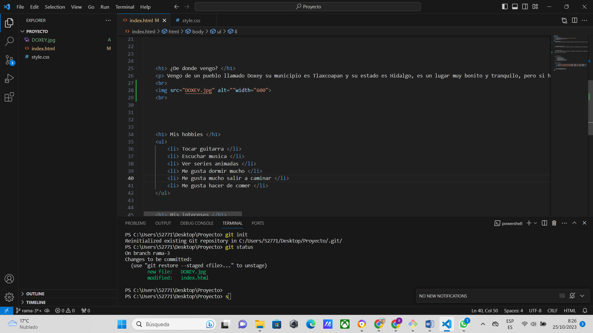

Me llamo Brayan Hernández Martínez, me gusta que me digan bri, tengo 18 años los cuales cumplí en julio de este año 2023 durante este tiempo estuve pensando en que universidad estudiaría termine escogiendo la universidad ITSOEH ya que era muy recomendada, me encuentro en primer cruzando el primer semestre y me gustaría llegar aún más lejos, pues mi propósito es poder terminar la carrera y ser un orgullo adentro de mi familia, me emociona llegar hasta aquí no pensé que fuera algo posible y hoy en día aunque sea un poco difícil sé que podre lograr mi propósito, este es uno de esos proyectos un pequeño inicio en este mundo tan grande de TICS. Me considero una persona tranquila y me gusta ayudar a otros cuando se pueda.
La razón por la que estudio TICs es porque es una carrera que va avanzando junto con la tecnología hoy en día, entonces en esto hay ciertos avances donde se utilizara aún más este tipo de ingenierías, para mi es más por interés económico me gustaría tener un buen sustento y una buena calidad de vida sin problemas, aunque en estas primeras etapas es más para poder ayudar a mi familia o vecinos o tener algunos trabajo pequeños de donde sacar un beneficio para mis estudios, el aprender esto me llevara de la mano junto al avance tecnológico de hoy en día.
Vengo de un pueblo llamado Doxey su municipio es Tlaxcoapan y su estado es Hidalgo, es un lugar muy bonito y tranquilo, pero si hablamos de que instituciones vengo, son las siguientes, vengo de la Escuela primaria Centro Educativo Doxey, Escuela Secundaria Revolución Mexicana y de la Preparatoria CECYTE Hidalgo Tetepango en este punto de mi vida tengo un título como técnico en soporte y mantenimiento en equipo de cómputo.Si hablamos de donde datos más personales, nací en el Mixquiahuala de Juárez en el Hospital Cinta Larga.
Autor: Brayan Hernandez Martinez.
230110578@itsoeh.edu.mx